DOLLHOUSE / H5 LIFE ACTIONS & RESERVATIONS
H5.6｜室内生活と2匹のやりとり（試作）
2匹が別々に動き、家具の近くでゆっくり生活します。空席を予約し、満席時は待機します。仮アニメーション・実機評価前の構成試作です。
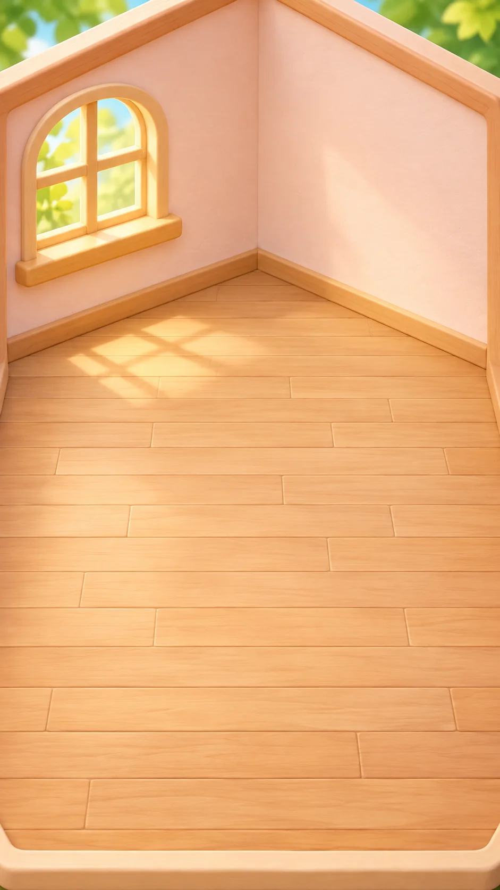
H5.6＋D/E｜独立統合試作
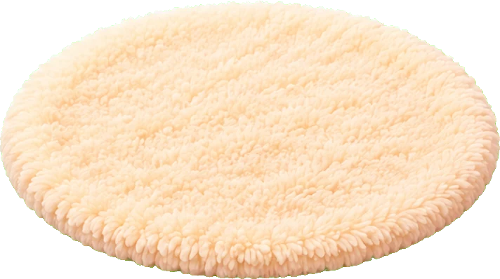
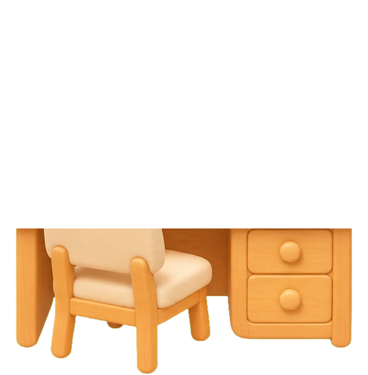
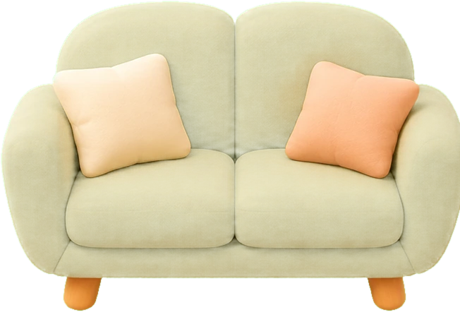
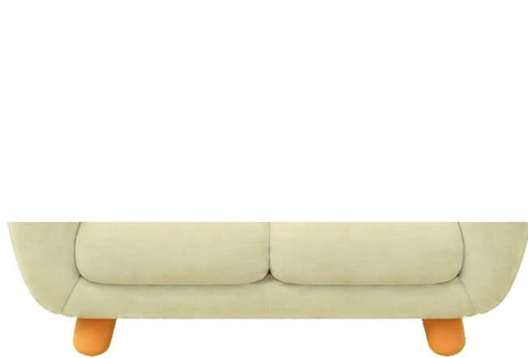
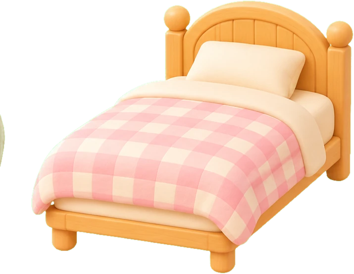
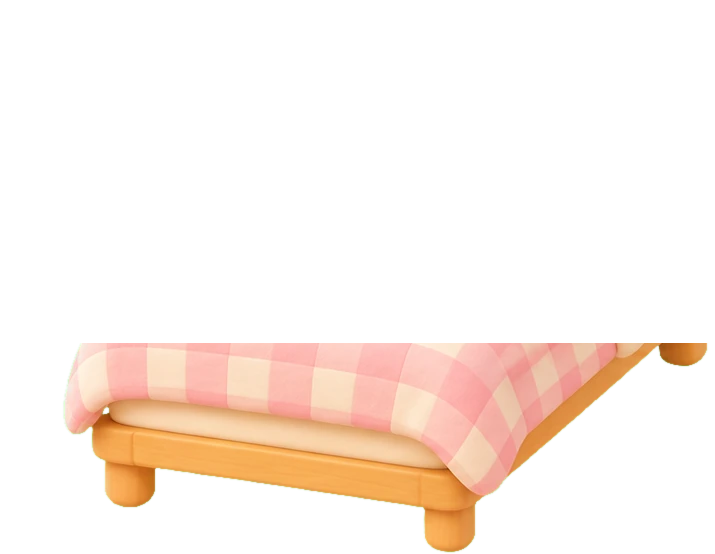
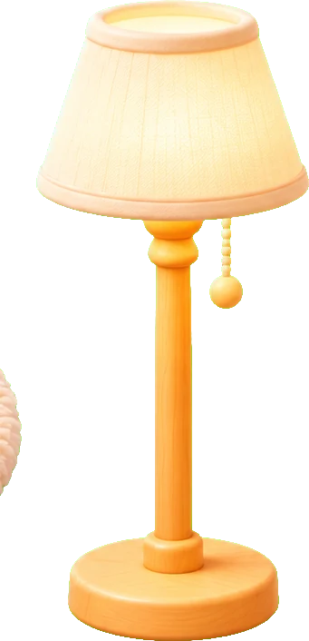
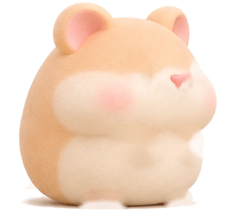
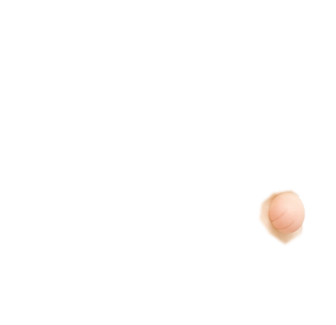
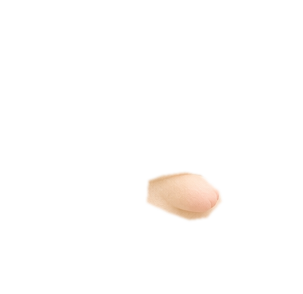
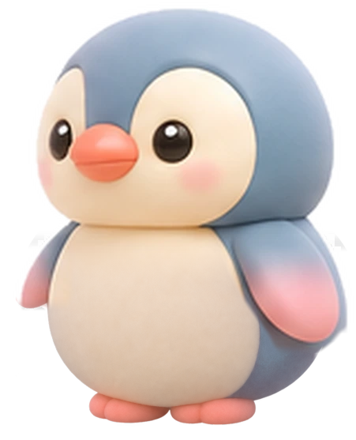
2匹に行き先を指示
キャラを選んで行き先を選択。先着が予約し、満席ならその場で待ちます。
動作確認中。JavaScriptが有効なブラウザでは2匹が独立移動します。
2匹の生活動作・予約と待機
2匹とも待機しています
行動ログ：未開始
家具画像のON/OFF：表示だけ切り替えます。衝突領域は残るため、模様替え機能ではありません。
2匹の表情とやりとり （D・E統合試作）
ラグで挨拶や会話、デスクと窓辺ではニュースの共有をします。既存の移動・席・予約を利用します。
共同演出：待機
ニュース共有：条件待ち
個別の表情・仕草（詳細）
ハムスターの表情
通常
生活連動：ON
ペンギンの表情
通常
生活表情連動：ON
ペンギンの仕草・大きさ
仕草：none
H5の現時点の課題
家具での作業・休憩・睡眠・挨拶・ニュース閲覧を仮演出として接続しました。ペンギンの歩行や専用ポーズは暫定のままで、デスク・ソファ・ベッドの前景遮蔽を試作中です。
家具の表示OFFは画像だけに作用し、席と障害物は残ります。ファイルプレビューでは一枚絵になる環境があるため、操作試験はMuseによるブラウザ実行時に行います。
画像データと配置データを分離。H1の元のscene.jsonは変更せず、新しいH2仮設定を収録しています。